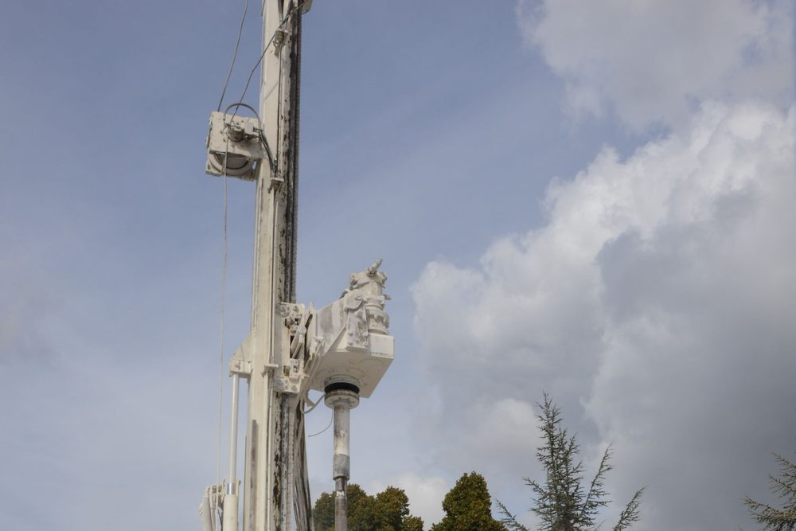
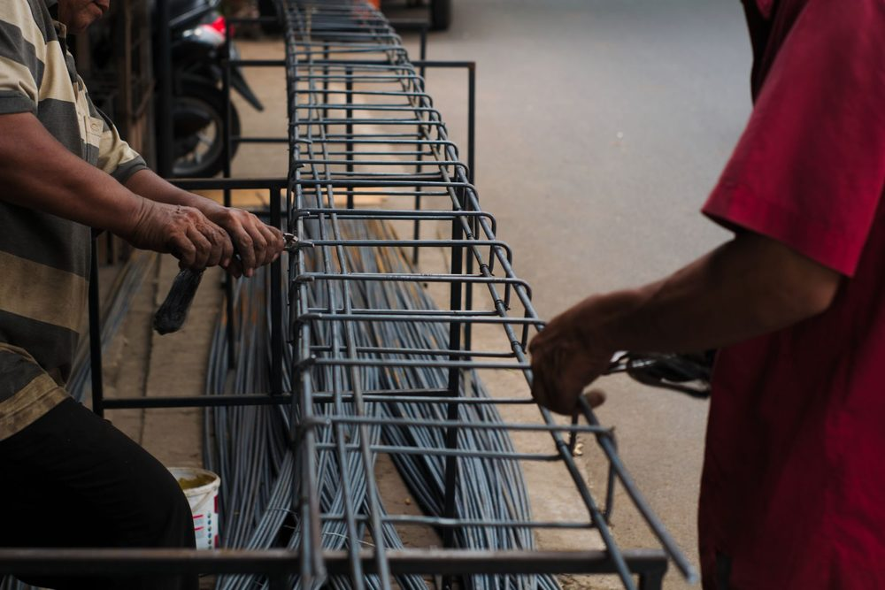

Fondation superficielle ou fondation profonde : la différence
Une fondation a une mission simple : transmettre au sol le poids du bâtiment sans que celui-ci s'enfonce ou se fissure. Elle peut le faire de deux façons très différentes, selon la profondeur à laquelle le sol est capable de porter.
Une fondation superficielle (semelle filante sous un mur, semelle isolée sous un poteau, radier général) s'appuie sur le sol par sa surface de contact, à faible profondeur. C'est la solution courante, économique et rapide, qui convient dès que le sol de surface a une portance suffisante. La portance désigne la capacité du sol à supporter une charge sans rompre et sans tasser de façon excessive.
Une fondation profonde reporte les charges beaucoup plus bas. Elle prend la forme de pieux ou de micropieux : des éléments verticaux élancés, en béton armé ou en acier scellé, qui descendent traverser les couches de mauvais sol pour s'appuyer sur une couche résistante. Ils reprennent la charge de deux manières combinées : par la résistance de leur pointe, et par le frottement du sol le long de leur fût.
Ce n'est pas une question de préférence, c'est le sol qui décide. On ne choisit pas des pieux par précaution : ils coûtent nettement plus cher que des semelles. On les retient lorsque le rapport géotechnique démontre que des fondations superficielles ne conviennent pas. Ce document est détaillé dans notre article sur le rapport géotechnique.
Les cas où le sol impose des fondations profondes
Quelques situations reviennent régulièrement et conduisent à abandonner les semelles superficielles. Elles sont identifiées par la mission géotechnique G2, qui fournit les données de dimensionnement.
| Situation | Problème posé | Pourquoi le profond répond |
|---|---|---|
| Sol de surface de faible portance (argile molle, limon lâche, tourbe) | Tassement important, voire rupture du sol sous les charges | Les pieux traversent ces couches et s'appuient sur un sol résistant en profondeur |
| Remblai | Matériaux hétérogènes, souvent mal compactés, susceptibles de tasser dans le temps | Les charges ne reposent plus sur le remblai mais sur le sol naturel situé dessous |
| Forte hétérogénéité du terrain sous l'emprise du bâtiment | Tassements différentiels entre une partie bien portante et une partie compressible, source de fissures | Tous les appuis sont ramenés à une même couche porteuse |
| Terrain en pente | Risque de glissement ou de fluage de la couche superficielle | Les pieux sont ancrés sous la zone susceptible de se déplacer |
| Argile très sensible au retrait-gonflement | Mouvements de la couche superficielle selon son humidité | Les pieux descendent sous la zone dont l'humidité varie |
| Sable saturé en eau en zone sismique | Risque de liquéfaction du sol en cas de séisme, traité par la partie 5 de l'Eurocode 8 (NF EN 1998-5) | Une étude spécifique détermine si des fondations profondes sont nécessaires |
Pour le cas particulier de l'argile, notre article sur les sols argileux et le retrait-gonflement détaille les dispositions possibles avant d'en arriver aux fondations profondes : dans bien des cas, des semelles ancrées plus bas et des chaînages continus suffisent.
Pieux et micropieux : le principe
Un pieu est un élément de fondation élancé, mis en place par forage dans le sol. Le pieu foré classique relève de la norme d'exécution NF EN 1536 : un forage de diamètre important est réalisé, une cage d'armatures y est descendue, puis le béton est coulé. Il convient aux charges élevées, mais exige une foreuse lourde et un accès de chantier adapté.
Le micropieu est un pieu de petit diamètre : la norme NF EN 14199 désigne ainsi les pieux dont le forage reste inférieur à 300 mm. Il est constitué d'une armature (un tube ou une barre d'acier) scellée au sol par un coulis, c'est-à-dire un mélange fluide de ciment et d'eau injecté dans le forage. Il reprend la charge essentiellement par frottement le long de son scellement. Sa foreuse légère passe dans des terrains difficiles d'accès, produit peu de vibrations et permet d'intervenir près d'un bâtiment existant, ce qui explique son usage fréquent en maison individuelle et en reprise en sous-œuvre.
| Critère | Semelles superficielles | Pieux forés | Micropieux |
|---|---|---|---|
| Reprise des charges | Contact de la semelle avec le sol près de la surface | Pointe et frottement le long du fût | Principalement frottement le long du scellement |
| Dimension courante | Largeur de la semelle | Diamètre de pieu supérieur à celui des micropieux | Diamètre de forage inférieur à 300 mm (NF EN 14199) |
| Justification géotechnique | NF P 94-261 | NF P 94-262 | NF P 94-262 |
| Exécution | NF DTU 13.1 | NF EN 1536 et NF DTU 13.2 | NF EN 14199 |
Les normes NF P 94-261 et NF P 94-262 sont les applications nationales de l'Eurocode 7 (NF EN 1997-1) pour les fondations superficielles et profondes. Elles fixent la manière de vérifier qu'un sol porte une charge donnée avec une marge de sécurité suffisante.

Longrines de répartition : comment la maison s'appuie sur les pieux
Un pieu n'est pas posé sous toute la longueur d'un mur comme une semelle filante : il ne travaille qu'en un point. On place donc les pieux aux endroits où les charges se concentrent (angles, croisements de murs, poteaux) et on les relie par des longrines. Une longrine est une poutre en béton armé qui reçoit les murs, puis répartit leur poids vers les têtes de pieux.
Lorsque plusieurs pieux se partagent un même appui, leurs têtes sont réunies par un massif en béton armé, parfois appelé semelle de répartition. En zone sismique, l'Eurocode 8 demande en outre de relier les têtes de fondations entre elles par des éléments rigides, afin qu'elles se déplacent ensemble pendant un séisme : c'est un rôle supplémentaire des longrines.
C'est ici que se situe le travail du bureau d'études structure. À partir de la descente de charges, qui indique le poids à reprendre à chaque appui, nous déterminons la charge à transmettre en tête de chaque pieu, puis nous dimensionnons les longrines et les massifs selon l'Eurocode 2. Ce dimensionnement est consigné dans une note de calcul béton armé et traduit en plans de coffrage et d'armatures.
Un point de conception à ne pas négliger : le plancher bas. Si les murs reposent sur des pieux alors que le sol de surface reste compressible, ce sol peut continuer à tasser sous un dallage sur terre-plein, qui se désolidarise alors des murs. Dans ce cas, on préfère en général un plancher porté par les longrines, sur vide sanitaire. La décision se prend projet par projet, à partir du rapport géotechnique.

Ordres de grandeur de coût
Soyons directs : des fondations profondes représentent un surcoût significatif par rapport à des semelles superficielles. Pour une maison individuelle, l'enveloppe se chiffre généralement en milliers d'euros, parfois en dizaines de milliers, là où des semelles filantes pèsent beaucoup moins dans le budget. Ce ne sont que des ordres de grandeur : seul le devis d'une entreprise de fondations spéciales, établi sur la base de votre rapport de sol, fait foi.
Ce qui fait varier le prix est plus utile à connaître qu'une fourchette :
- Le nombre de pieux, qui dépend des charges à reprendre et de la capacité de chaque pieu.
- La longueur des pieux, fixée par la profondeur à laquelle se trouve le sol porteur. Un sol résistant plus profond rallonge chaque pieu.
- Le diamètre et le type : pieu foré ou micropieu, mode d'injection du coulis.
- L'accès du chantier : un terrain exigu impose du matériel plus léger et plus lent.
- L'installation de chantier : l'amenée et le repli de la foreuse sont un poste forfaitaire, qui pèse d'autant plus que le chantier est petit.
À l'inverse, des fondations insuffisantes se paient bien plus cher a posteriori : reprise en sous-œuvre, traitement des fissures, perte de valeur du bien. Un dimensionnement soigné, avec un nombre de pieux et des longrines bien proportionnés, permet de ne payer que ce que le sol exige.
Qui fait quoi sur un projet de fondations profondes
Trois intervenants se partagent le sujet, et il vaut mieux savoir lequel répond à quelle question :
- Le géotechnicien réalise l'étude de sol (mission G2, phase PRO) et indique la nature des couches, la profondeur du sol porteur et les portances disponibles. MH Structure ne réalise pas d'étude de sol.
- L'entreprise de fondations spéciales réalise les forages, met en place les pieux et assure leur exécution sur le chantier. Ces travaux ne font pas partie des prestations de MH Structure, qui n'est ni entreprise ni maître d'œuvre d'exécution.
- Le bureau d'études structure, c'est-à-dire MH Structure, exploite le rapport géotechnique, détermine les charges en tête de pieux, dimensionne les longrines et les massifs, et produit la note de calcul ainsi que les plans de coffrage et d'armatures.
Quelques conseils de bon sens pour la phase chantier, qui relèvent de l'entreprise et ne figurent pas sur nos plans : demander que la longueur réellement forée soit comparée à celle prévue au rapport de sol, et garder une trace écrite du déroulement de chaque pieu. Si le sol rencontré diffère de ce que le rapport annonçait, prévenir sans attendre le géotechnicien et le bureau d'études.
Votre rapport de sol évoque des fondations profondes ? Transmettez-le nous : nous analysons les résultats, déterminons les charges à reprendre en tête de pieux et dimensionnons les longrines et massifs qui les relient à votre construction. Devis gratuit sous 48h.
Questions fréquentes
Micropieu ou pieu : quelle est la différence ?
La différence tient d'abord au diamètre et au matériel. Un micropieu est un pieu de petit diamètre, dont le forage reste inférieur à 300 mm selon la norme NF EN 14199, mis en place avec une foreuse légère. Un pieu foré classique, qui relève de la norme NF EN 1536, a un diamètre plus important et reprend des charges plus élevées. Pour une maison individuelle, ce sont le plus souvent des micropieux qui sont retenus.
Quand faut-il des fondations profondes pour une maison individuelle ?
Lorsque le rapport géotechnique montre que le sol de surface ne peut pas porter la construction : sol de faible portance, remblai, terrain très hétérogène, terrain en pente instable ou couche argileuse active très épaisse. La décision ne se prend jamais à l'estime : elle s'appuie sur une mission géotechnique G2, phase PRO, qui indique à quelle profondeur se trouve un sol suffisamment résistant.
Peut-on conserver un dallage sur terre-plein avec des micropieux ?
C'est déconseillé lorsque le sol de surface est compressible, car il peut continuer à tasser sous le dallage alors que les murs restent portés par les pieux. Dans ce cas, on préfère en général un plancher porté par les longrines, sur vide sanitaire ou sur coffrage perdu. Le choix se fait projet par projet, à partir du rapport géotechnique.
MH Structure réalise-t-il les forages et la pose des micropieux ?
Non. Les forages et la mise en œuvre relèvent d'une entreprise de fondations spéciales, et l'étude de sol d'un géotechnicien. MH Structure intervient en bureau d'études structure : nous exploitons le rapport géotechnique, déterminons les charges à reprendre en tête de chaque pieu, puis dimensionnons les longrines et massifs de têtes de pieux avec leurs plans de coffrage et d'armatures selon l'Eurocode 2.